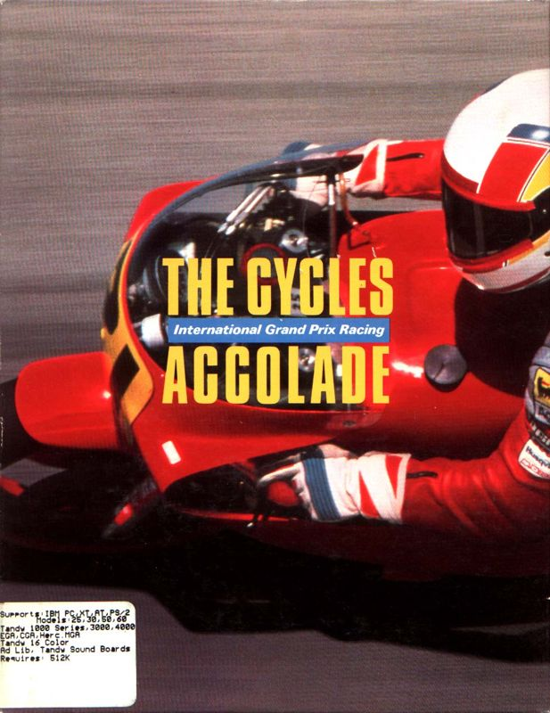
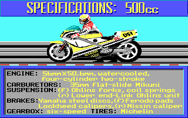
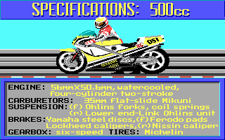

Play date: 1989
Developer: Distinctive Software
Publisher: Accolade
Memo: -
Description: Based on Grand Prix Circuit's engine, The Cycles was revolutionary for its time: it was the only motorcycle game at the time with a first-person perspective. Accolade continues its strong point in graphics, as turns are depicted realistically and the animations of other racers are very smooth. Choose from 5 skill levels, then compete in 3 performance classes (500, 250, or 125cc) in the world's most grueling courses that range from Australia to Brazil. Another forgotten classic that reaffirms Accolade as the premier developer of sport games.
 
